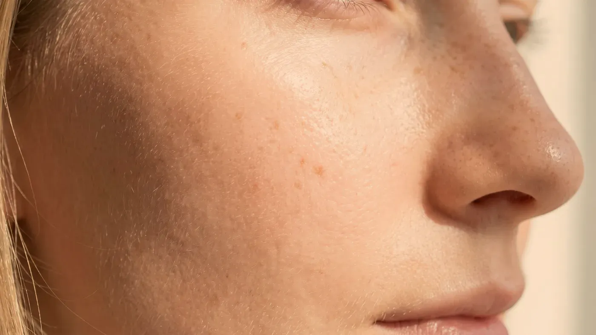

Cilt sorunları · Leke
Benzer görünen lekeler farklı yollardan gelir
Güneşin yıllar içinde bıraktığı lekeler, ışığa ve hormonlara duyarlı melazma ve bir iltihabın ardından kalan koyulaşma birbirine benzeyebilir; ancak her biri başka bir plan ister. Türü belirlenmeden yapılan bir müdahale lekeyi koyulaştırabilir ve toparlanmayı uzatabilir. Bu yüzden önce lekenin türü ayrılır.

Görsel yapay zekâ ile üretilmiştirAyrım
Lekeniz hangi gruba giriyor olabilir?
Aynı kahverengi ton, derinin farklı katmanlarında ve farklı mekanizmalarla ortaya çıkabilir. Yalnızca rengi hedef almak, leke planlamasında en sık yapılan yanlıştır. Muayenede lekeler dört başlık altında toplanır; hangisinin sizde olduğu yakından bakı ve büyütmeli incelemeyle anlaşılır.
Güneşe bağlı lekeler
Uzun yıllar güneş gören bölgelerde beliren, kenarı net, açık ya da koyu kahverengi, düz lekelerdir. En çok el sırtında, ön kolda, omuzlarda, alında ve elmacık üzerinde görülür. Zamanla sayıları artabilir ve kış aylarında belirgin biçimde açılmazlar. Bu grupta hedef çoğunlukla tek tek lekelerdir.
Melazma
Çoğunlukla yüzün iki yanına birbirine benzer biçimde yerleşen, kenarları düzensiz ve harita gibi yayılan kahverengi alanlardır. En çok alında, elmacıklarda, üst dudağın üzerinde ve çene kenarında görülür.
Güneş ışığı, görünür ışık, sıcak ortam, gebelik ve hormon içeren ilaçlar tetikleyici olabilir. Yaz aylarında koyulaşır; tetikleyici sürdükçe yeniden belirme eğilimi taşır. Tahrişe hassastır: sert soyucu işlemler ya da ısı oluşturan uygulamalar, kısa süreli bir açılmanın ardından daha koyu bir geri dönüşe neden olabilir. Bu grupta ısı oluşturmayan, yavaş ilerleyen seçenekler tercih edilir.
İltihap sonrası koyulaşma
Bir sivilce, sürtünme, kaşıntı, yanık ya da cilde yapılan bir işlem iyileşirken geride kalan koyu renktir. Biçimi genellikle önceki lezyonun şeklini izler ve koyu tenlerde daha uzun sürer. Burada asıl yapılması gereken, koyulaşmayı başlatan iltihabı kontrol altına almaktır; bu sağlanmadan sürdürülen bir leke planı kalıcı sonuç vermez.
Lekeyle karışan diğer renk değişiklikleri
Kızarıklık ve genişlemiş küçük damarlar bazen leke sanılabilir. Benler, doğuştan gelen renk farklılıkları ve bazı ilaçlara bağlı değişiklikler ayrı bir grupta değerlendirilir. Göz altındaki koyuluk ise çoğu zaman pigmentten değil, damar ve yapı değişikliğinden kaynaklanır.
Birkaç ay içinde büyüdüğünü fark ettiğiniz, içinde birden fazla renk barındıran, kenarları düzensizleşen, kanayan veya kabuk bağlayan bir leke ya da ben estetik bir konu olarak ele alınmaz. Böyle bir lekeye açıcı hiçbir işlem yapılmaz. Muayenede dermatoskopla bakılsa bile tanı ve tedavi kararı burada verilmez; lekenin vakit kaybetmeden bir dermatoloji uzmanı tarafından değerlendirilmesi önerilir.
Bütün leke türlerinin ortak tetikleyicisi ışıktır. Korunma olmadan yürütülen bir plan kalıcı olmaz; aylarca emek verilerek sağlanan açılma, korunmasız geçen birkaç yaz gününde geri dönebilir. Bu yüzden mevsimden bağımsız, gün içinde tazelenen bir koruma alışkanlığı hedeflenir. Hava kapalıyken ya da pencere kenarında otururken de ışık derinize ulaşır.
Geniş kenarlı şapka, gölgede kalmak ve öğle saatlerinde dışarıda olmamak bazen tek başına ürün kullanmaktan daha belirleyicidir. Hassas ciltlerde güneş koruyucunun kendisi de tahriş yapabilir; bu nedenle ürün seçimi cildinizin toleransına göre muayenede birlikte gözden geçirilir.
Sonrası
Leke türü belirlendikten sonra hangi seçenekler konuşulur?
Güneşten korunma alışkanlığı yerleştikten ve cilt sakinleştikten sonra aşağıdaki başlıklar değerlendirilir. Bunlar genel bilgidir; size özel plan muayeneden sonra hekim tarafından kurulur. Tetikleyici devam ettiği sürece lekenin yeniden belirmesi mümkündür.
Pico lazer ile leke
PİGMENTMuayenede belirlenir→Mezoterapi
DESTEKMuayenede belirlenir→Karbon peeling
YÜZEYMuayenede belirlenir→Hekim muayenesi
DAHİLİAynı gün→
Pico lazer ile leke
Güneşe bağlı, kenarı net yüzeysel lekelerde pikosaniye atımlarla pigmentin hedeflenmesi amaçlanır; melazmada ilk seçenek değildir.
Sayfasına git →Sorgulayın
Sorunuzu seçin, cevap ekrana düşsün
Sonraki adım
Lekenizin nereden geldiğini muayenede ayıralım
Lekenin kaynağı belirlendikten sonra hangi adımla başlanacağı ve korunmanın nasıl sürdürüleceği birlikte planlanır.
Bu içerik Uzm. Dr. Rahmi Cebeci (Aile Hekimliği Uzmanı · Medikal Estetik Sertifikalı) tarafından hazırlanmış ve tıbbi doğruluk yönünden denetlenmiştir.
Bu sayfadaki bilgiler genel bilgilendirme amaçlıdır; tanı veya tedavi önerisi niteliği taşımaz ve hekim muayenesinin yerine geçmez. Sonuçlar kişiden kişiye değişiklik gösterebilir.